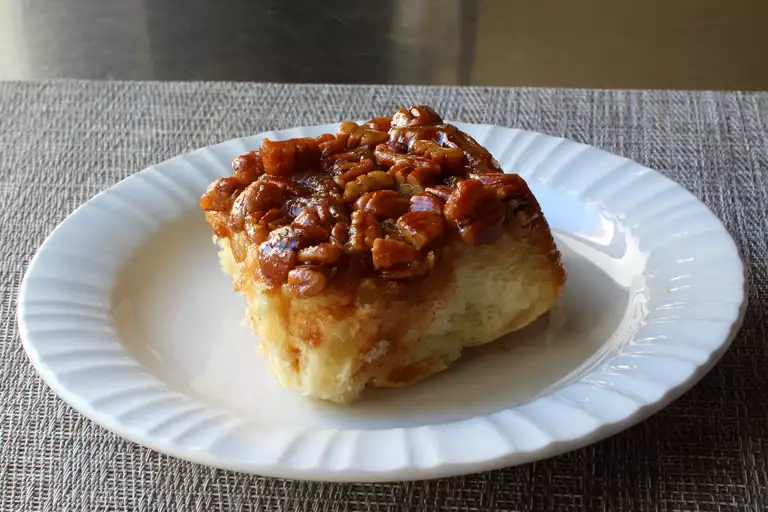

Chef John's Sticky Buns
by John Mitzewich

Description:
These sticky buns are Mr. Mitzewich (Chef John) first recipe he's ever made for his
family. "It's been my experience with baking that the harder a dough
is to work with, the better it comes out and this is no exception--
the contrast between this beautifully tender, airy dough and the sweet,
crunchy, stiky topping is just otherwordly."
Ingredients:
For the Dough:
- 2/3 cup warm water
- 2/3 cup warm milk
- 2 teaspoon active dry yeast
- 2 tablespoons white sugar
- 1 large egg, beaten
- 6 tablespoons unsalted butter, melted
- 4 cups all-purpose flour, or more as needed
- 1 1/2 teaspoons fine salt
For the Sticky Topping:
- 1/2 cup packed light brown sugar
- 1/4 cup white sugar
- 1 pinch salt
- 6 tablespoons unsalted butter, melted
- 3 tablespoons water
- 1 cup chopped toasted pecans
Sugar Filling:
- 3/4 cup packed light brown sugar
- 1 teaspoon ground cinnamon
Directions:
-
Combine warm water and milk in a mixing bowl and sprinkle yeast
over. Let sit until frothy, about 10 minutes.
-
Add sugar, egg, and melted butter for dough to the yeast mixture.
Mix with a whisk before adding 75% of the flour with the salt. Mix,
adding more flour, until a very soft and sticky dough is formed. Let
knead in the mixer for about 5 minutes. Cover and let rise in a warm
spot until doubled in size, about 1 hour.
-
While dough is rising, preheat the oven to 375 degrees F (190 degrees C).
Generously butter a 9x13-inch metal baking pan.
-
Combine brown sugar, white sugar, salt, melted butter, and water for topping
in a bowl. Mix thoroughly until smooth. Pour into the prepared pan and spread
evenly to cover the bottom. Scatter pecans evenly over the top. Set aside
until needed.
-
Transfer dough onto a lightly floured surface. Lightly flour your hands and press
and stetch the dough to form a 18x15-inch rectangle. Sprinkle cinnamon-sugar mixture
evenly over the dough to the edges, leaving a 2-inch border along the edges.
Lightly press the sugar mixture into the dough with your hands.
-
Roll the dough into a cylinder with lightly floured hands starting with the edge
closest to you; try not to roll too tightly. Finish shaping the cylinder as uniformly
as possible, seam-side down. Lightly score the roll with the edge of a knife to indicate
12 equal portions.
-
Slide a piece of string or floss under the dough, lining it up at the first knife mark.
Cross the ends of the string over the top and pull in opposite directions to cut through
the dough. Continue with remaining dough.
-
Transfer buns into the pan with topping, making 3 rows of 4 buns. If one side of a bun has
more dough than another, place with the doughier side up in the pan. Tent the pan loosely with
foil and let rise until buns have almost doubled in size, 45 minutes to 1 hour. Save
foil in case you need it towards the end of baking time.
-
Bake in the preheated oven until an instant-read thermometer inserted into the center of a bun
reaches 200 degrees F (93 degrees C), about 35 mintues. If the tops are getting too browned, loosely
tent the pan with foil for the last 5 to 10 mintues of baking time.
-
Remove from the oven onto a wire rack and let cool for 5 minutes. Turn pan over carefully onto a serving
platter. Use a spoon to transfer any sticky topping that has remained in the pan. Let cool and serve warm or at
room temperature.
Notes:
"I have used a glass pan for the topping, but try to use metal, because it seems to work a little better. You can use
walnuts, or any other nut that you want for the topping; I think the sweeter, richer pecans work better here."